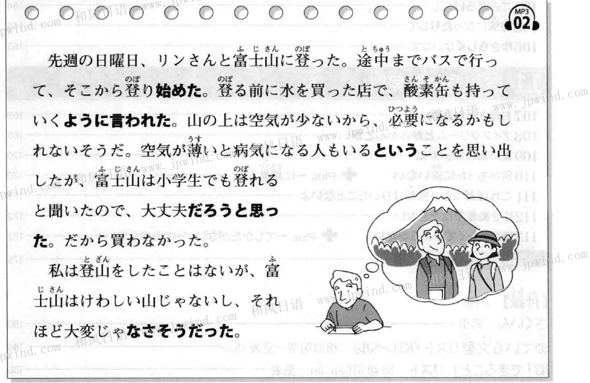
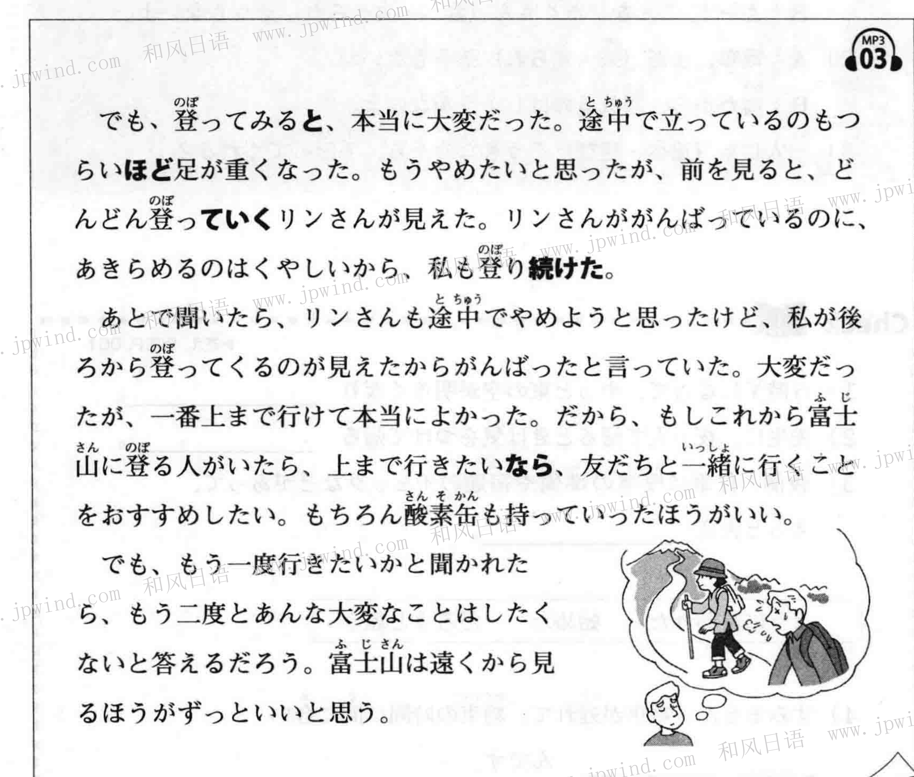
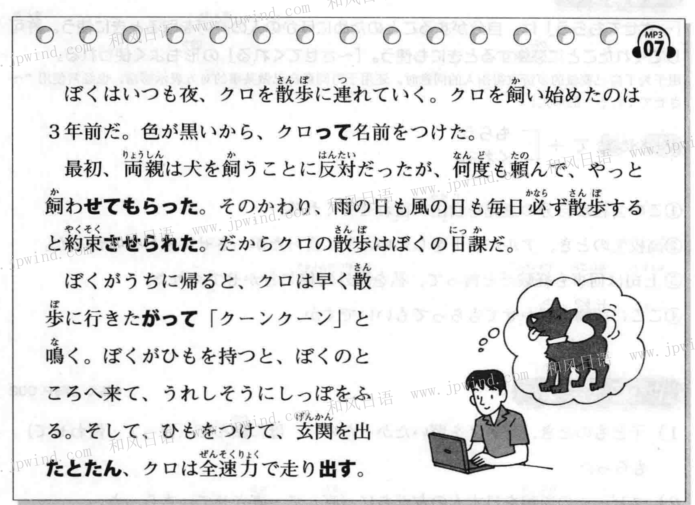
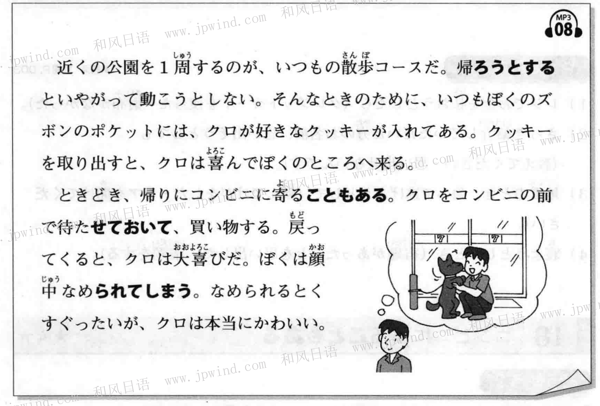

课文音频可以暂停和拖动进度。答案与中文说明点击展开。

上周日，我和林（リン）去爬富士山。先坐巴士走了一段，然后从那里开始登山。
登山前买水时，店员还让我带上氧气罐。据说山上空气稀薄，可能会用得上。
我想起有人会因空气稀薄而生病，但听说连小学生也能登富士山，就觉得应该没事。因此没买氧气罐。
我虽然没登过山，但富士山看起来并不险峻，似乎也不会那么辛苦。
富士山（ふじさん）／登る（のぼる）／途中（とちゅう）／酸素缶（さんそかん）／空気が薄い（くうきがうすい）：空气稀薄／険しい（けわしい）：险峻。
V辞書形／Vない形 ＋ ように言う・頼む・注意する
酸素缶も持っていくように言われた。
先生に、宿題を忘れないように注意された。
被嘱咐也要带上氧气罐。
老师提醒我不要忘记作业。
转述别人提出的要求、指示或提醒。肯定用辞书形：持っていくように；否定用ない形：忘れないように。
「母に買うように頼まれた」表示我被妈妈拜托；「母に買うように頼んだ」表示我拜托妈妈。注意谁提出请求、谁来做。
这里的「ように」引出要求的内容；不必和表示目的的「〜ように」混为一谈。
普通形 ＋ という ＋ 名詞
病気になる人もいるということを思い出した。
明日は休みだという連絡があった。
我想起了也有人会生病这件事。
收到明天休息的通知。
「〜という」把前面一句话的内容连接到「こと・話・ニュース・連絡」等名词。名词或な形容词后可保留「だ」：休みだという連絡。
普通形 ＋ だろうと思う
大丈夫だろうと思った。
雨はもうすぐやむだろうと思う。
我觉得大概没问题。
我想雨大概很快会停。
表示不确定但推测“大概……”。动词、い形容词用普通形；名词和な形容词去掉「だ」再接「だろう」：大丈夫だろう。过去的推测可说「だろうと思った／思っていた」。
い形容詞：〜くなさそう
な形容詞・名詞：〜じゃなさそう
それほど大変じゃなさそうだった。
この料理は辛くなさそうです。
電車はまだ来そうもない。
看起来没那么辛苦。
这道菜看起来不辣。
电车看起来暂时还不会来。
「〜なさそう」根据眼前情形判断“看起来不……”。い形容词：辛い→辛くなさそう；な形容词／名词：大変じゃなさそう。动词用ます形去ます＋そうもない／そうにない：来ます→来そうもない，表示看起来不会发生。
Vます形（去ます）＋始める／終わる
そこから登り始めた。
その本を読み終わったら、貸してください。
从那里开始登山。
那本书看完之后，请借给我。
始める：明确表示持续一段时间的动作或变化开始。登ります → 登り始める；雨が降り始める。
終わる：强调动作完成。読みます → 読み終わる；食べます → 食べ終わる。
「〜始めた」表示开始了；「〜終わったら」表示做完之后。不要把「ます」留在中间。
読み終わったら：读完之后。
降り始めた：开始下雨。
转述要求：辞书形＋ように言われる。
「という」连接内容与名词。
「いただきます」是开始吃饭前说的话，所以选“开始”。食べます去掉ます，再加始める。
“请写完作文的人交上来。”交作文的前提是写完，用「終わる」。書きます → 書き＋終わる。
“用完之后请放回原处。”用「Vます形＋終わる」。这里「たら」表示做完后再做下一件事。
转述禁止或提醒时用「Vない＋ように」。整句：先生に遅刻しないように注意されました。
「買ってくる」表示买了再回来；转述请求用「辞书形＋ように頼む」。这里被拜托，所以用「頼まれました」。
肯定指示用「Vる＋ように言う」。片付ける不必再变成て形。
抓住「ので」前的理由和「だから」后的结果。“没有必要”是作者的判断，并不是店员说不用买。
飲む → 飲まない，再接「ように」。“被告知不要喝”是「飲まないように言われる」。
「休みだという連絡」：通知的内容是“明天休息”。
「という」把台风接近这一内容接到「ニュース」前。
「降るだろうと思う」表示推测；不是确定的事实。
「大変」是な形容词，去掉「だ」再接「だろう」：大変だろう。
辛い → 辛くなさそう。根据外观或情况判断“不太辣”。
来ます去掉ます，接「そうもない／そうにない」。表示看起来暂时不会来。
店员建议带氧气罐，因为山上的空气稀薄。
课文说「登山をしたことはない」：之前没有登山经验。
読みます → 読み終わったら，表示读完后再还书。
转述不要做某事的提醒：ない形＋ように注意される。

然而，实际爬起来非常辛苦。途中双腿沉重，甚至站着都很难受。我想放弃，但看到林同学努力往上爬，不甘心放弃，于是也继续爬。
后来才知道，林同学也曾想放弃，但看到我在后面坚持，所以也继续努力。虽然很辛苦，能到达山顶真是太好了。如果想登顶，我推荐和朋友一起去，当然也最好带上氧气罐。
不过，如果问我想不想再去一次，我会回答再也不想做那么辛苦的事了。我觉得远远地看富士山要好得多。
途中（とちゅう）：途中／あきらめる：放弃／続ける（つづける）：继续／酸素缶（さんそかん）：氧气罐
登ってみると、本当に大変だった。
一爬才发现真的很辛苦。
做了某事后发现新的情况，后句常是已经发生的事实。类似用法也可用「〜たら」。
立っているのもつらいほど、足が重くなった。
腿沉重到连站着都很难受。
用某种程度作例子，表达程度很深：累到连站着都困难。
リンさんがどんどん登っていく。
後ろから登ってくる。
林同学不断往前爬；从后面爬过来。
「ていく」可表示离开说话人或从现在持续到将来；「てくる」可表示朝说话人接近，或从过去持续到现在。
私も登り続けた。
毎日日本語を勉強し続ける。
我也继续爬；每天持续学习日语。
强调动作持续或反复进行。登ります→登り続ける；勉強します→勉強し続ける。
上まで行きたいなら、友だちと一緒に行こう。
如果想登到山顶，就和朋友一起去吧。
针对对方提到的情况提出建议或判断。“如果想登顶的话……”；不必理解为前项必须先发生。
「と」表示做某事后发现的情况。
表示程度：惊讶到说不出话。
动词ます形去ます＋続ける。
「なら」接对方提到的情况，给出建议。
进入房间后发现没有人。这里表示意外发现。
累到走不动，用「ほど」表示程度。
从现在持续到将来，用「ていく」。
歩きます→歩き続けた，表示一直走。
针对对方要去北海道的情况提出建议。
根据课文回答，意思正确即可。
注意课文中关于朋友和氧气罐的建议。
到站后发现朋友已经来了。
表示工厂吵得连说明都听不到。
走り続けています：一直坚持跑步。

我每天晚上都会带小黑出去散步。三年前开始养它，因为毛色是黑色的，就给它取名叫小黑。
起初父母反对养狗，但我请求了好多次，终于得到允许。作为条件，他们让我保证无论刮风下雨，每天都要遛狗。因此，遛小黑成了我的日常任务。
我回到家时，小黑总想赶快去散步，发出呜呜的叫声。我一拿起绳子，它就跑到我身边，高兴地摇尾巴。系好绳子，刚一出门，小黑就全速跑起来。
飼う（かう）：饲养／散歩（さんぽ）：散步／頼む（たのむ）：请求／ひも：绳子／玄関（げんかん）：门口
クロって名前をつけた。
田中さんって人を知っていますか。
取了小黑这个名字；你认识叫田中先生的人吗？
口语中「って」可代替「という」，介绍名字或称呼。正式写作中通常使用「という」。
両親に犬を飼わせてもらった。
父母允许我养狗。
得到别人的许可而做某事，或对允许表示感激。飼う→飼わせる→飼わせてもらう。与「飼ってもらう」（请别人养）区别做动作的人。
毎日散歩すると約束させられた。
先生に野菜を食べさせられた。
被要求保证每天散步；被老师要求吃蔬菜。
表示被要求做自己不愿意做的事。食べる→食べさせられる；飲む→飲まされる／飲ませられる。注意和允许自己做的「させてもらう」区分。
クロは散歩に行きたがっている。
小黑表现出想去散步的样子。
根据表情、行为等描述别人或动物表现出的感受或愿望。行きたい→行きたがる；怖い→怖がる。描述自己通常直接用「たい」。
玄関を出たとたん、クロは走り出す。
刚出门，小黑就跑起来。
表示某事刚发生，紧接着出现另一情况。后项通常是意外发生的情况，避免用说话人事先计划的意志行为。
クロは全速力で走り出す。
急に雨が降り出した。
小黑全速跑起来；突然下起雨来。
表示动作或变化突然开始。走ります→走り出す；降ります→降り出す。比「始める」更突出突然发生。
帰らせてもらう：得到允许早走。
「〜たがっている」描述他人表现出的愿望。
「たとたん」表示刚发生前项，后项随即发生。
动词ます形去ます＋出す，表示突然开始。
口语中「って」可以代替「という」。
飼う→飼わせてもらう：获得许可，由自己养。
食べさせられた：被迫吃。
根据外在表现说小狗想出去：行きたがっている。
刚出门就下起雨，接「た形＋とたん」。
泣き出した：突然哭起来。
课文说因为毛色是黑色而取名。
父母要求无论天气如何都要每天遛狗。
「田中さんって人」是口语说法。
置かせてもらってもいいですか：可以让我放行李吗。
寒い→寒がる：从表现看出他怕冷。
门刚开，狗就冲了出去。

平常的散步路线是绕附近的公园一圈。一准备回家，小黑就不高兴，不肯动。为此，我的裤兜里总放着它喜欢的饼干。拿出饼干，小黑就会高兴地跑过来。
有时回程会顺路去便利店。我让小黑在店前等着，自己去买东西。回来时它特别高兴，我的脸会被它舔个遍。虽然被舔得痒痒的，但小黑真的很可爱。
寄る（よる）：顺路去／待たせる（またせる）：让……等／なめる：舔／くすぐったい：痒
帰ろうとすると、クロは動こうとしない。
一要回家，小黑就不肯动。
表示正要做、试图做；「〜ようとしない」可表示不愿做。帰る→帰ろうとする。
帰りにコンビニに寄ることもある。
回程有时也去便利店。
表示有时会发生。与「Vたことがある」表示过去经历不同。
クロを前で待たせておく。
让小黑在前面等着。
让人或动物继续某个动作或保持某种状态。待つ→待たせておく。
顔をなめられてしまう。
脸被舔了个遍。
受身形加「しまう」，可表示对他人行为感到困扰或遗憾。
意向形＋とする：正要做某事。
辞书形＋ことがある：有时会做。
待たせておく：让对方等着。
消されてしまった：被删除，带有遗憾语气。
意向形＋とする：正要做。
「飲もうとしない」表示不肯喝。
ない形＋ことがある：有时不做。
辞书形＋ことがある：偶尔会做。
待たせておく：让狗等着。
遊ばせておく：让孩子保持玩耍的状态。
食べられてしまった：被弟弟吃掉，表达遗憾。
降られてしまう：遭遇下雨，带困扰语气。
裤兜里放着小黑喜欢的饼干。
作者让小黑在便利店前等。